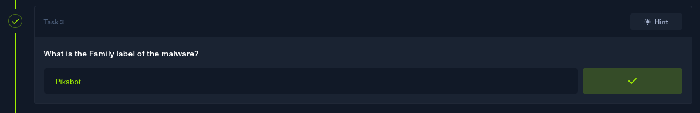
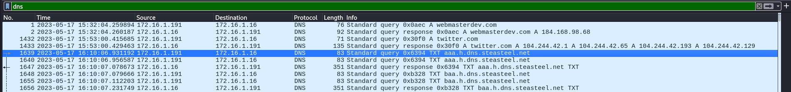

Compromised
Task 1
After a brief look at the PCAP file, I noticed lots of TCP packets coming from 162.252.72.54.
I'll input this IP as the answer to the first task.
Task 2
Checking some of the TCP packets, all I saw were pieces of a GIF file being transfered.
And checking the HTTP packets confirms that the compromised machine has received the file. There is also a certificate, which might come in handy later.
To see all the files included within this capture, I'll go to File -> Export objects and then HTTP.
This file coming from the attacker's IP address is intriguing. It is the same GIF file I've seen in the packets earlier.
I'll export it, and I'll put it into virustotal to get an idea of what it actually is.
On the details page, there's the SHA256 hash of the malware. The answer to task 2.
Task 3
Back on the detection page, the malware's name, category and its family label can be seen.
I'll input Pikabot as the answer to the 3rd task.

Task 4
Still on the virustotal result page, after going to details -> history, a few important dates related to the malware are uncovered.
Those include the date of this malware's first sighting in the wild, which is the answer to task 4 as well.
Task 5
For task 5, I'll return to wireshark. To display all the ports with activity in this pcap, I can go to statistics -> destinations and ports.

Since the there was a mention of HTTPS and certs, I'll filter the results by TLS/SSL.
There are a few ports here. 443 is a HTTPS port, the 51XXX ports I'm not really sure what they are, but the three other ports definitely stand out.
2222 - Often used as an alternate SSH port, or for SFTP(Secure File Transfer Protocol).
2078 - Unsure to be absolutely honest.
32999 - Sometimes used by remote access tools, or by certain Trojan or backdoor malware.
I'll answer the question using these 3 ports.
Task 6
I filtered all the packets for TLS in wireshark, and began searching for any packets that had "Certificate" in their info.
I found a few coming from port 2222, but none of their id-at-localityName values matched with the desired answer.
A bit further on, I stumbled upon a packet coming from port 2078, which had a peculiar value for that attribute.
After inputting it as the answer, it was accepted.
Task 7
Conveniently, the notBefore date can be found not too far away from the previous answer.
I'll transfer it into the answer box, without changing anything.
Task 8
For the last task, I have to find the domain that was used for tunneling. I'll filter the packets for DNS in wireshark.

I can see that the majority of packets come associated with steasteel.net
I went to alienvault to get more information about this domain.
https://otx.alienvault.com/
And searched for it.
I found out that the domain is related to pikabot. This should definitely be the answer to the last question.
Solved!